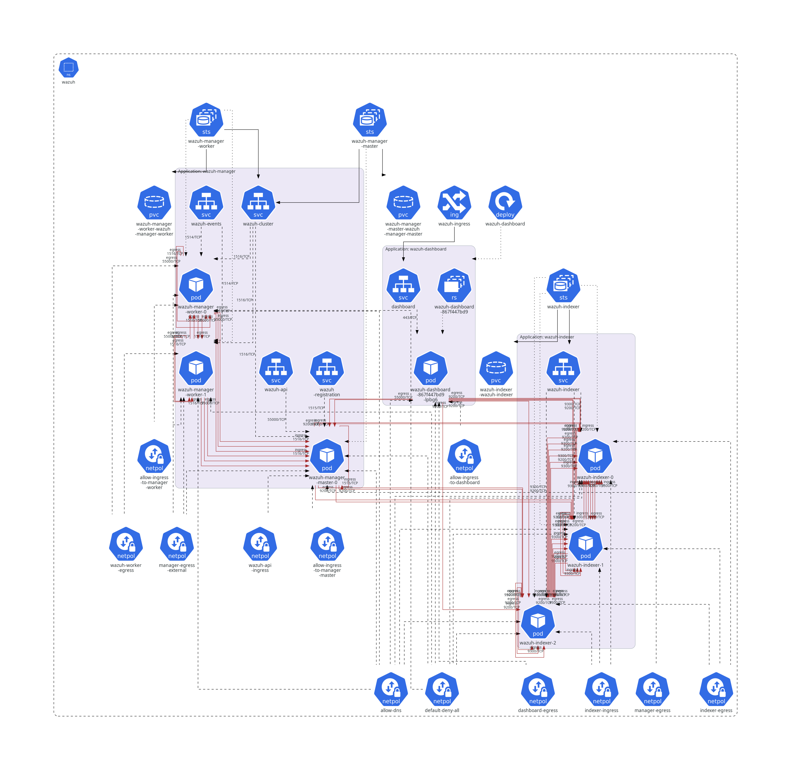

Introduction


Wazuh Kubernetes Documentation
Amazon EKS development
To deploy a cluster on Amazon EKS read the instructions on Usage: AWS EKS Deployment. Note: For Kubernetes version 1.23 or higher, the assignment of an IAM Role is necessary for the CSI driver to function correctly. Within the AWS documentation you can find the instructions for the assignment: https://docs.aws.amazon.com/eks/latest/userguide/ebs-csi.html The installation of the CSI driver is mandatory for new and old deployments if you are going to use Kubernetes 1.23 for the first time or you need to upgrade the cluster.
Local development
To deploy a cluster on your local environment (like Minikube, Kind or Microk8s) read the instructions on Usage: Local Deployment.
Diagram

Directory structure
├── docs
│ ├── dev
│ │ ├── run-tests.md
│ │ └── setup.md
│ ├── ref
│ │ ├── getting-started
│ │ ├── introduction
│ │ ├── backup-restore.md
│ │ ├── glossary.md
│ │ ├── introduction.md
│ │ ├── performance.md
│ │ ├── uninstall.md
│ │ └── upgrade.md
│ ├── README.md
│ ├── SUMMARY.md
│ ├── book.toml
│ ├── build.sh
│ ├── server.sh
│ └── wazuh-namespace.png
├── envs
│ ├── eks
│ │ ├── network-policies
│ │ ├── dashboard-resources.yaml
│ │ ├── indexer-resources.yaml
│ │ ├── kustomization.yml
│ │ ├── storage-class.yaml
│ │ ├── wazuh-master-resources.yaml
│ │ └── wazuh-worker-resources.yaml
│ └── local-env
│ ├── indexer-resources.yaml
│ ├── kustomization.yml
│ ├── storage-class.yaml
│ └── wazuh-resources.yaml
├── tests
│ ├── conftest.py
│ └── k8s_pytest.py
├── tools
│ └── repository_bumper.sh
├── traefik
│ ├── crd
│ │ └── kubernetes-crd-definition-v1.yml
│ └── runtime
│ ├── kustomization.yml
│ ├── traefik-cluster-role-binding.yaml
│ ├── traefik-cluster-role.yaml
│ ├── traefik-deployment.yaml
│ ├── traefik-ns.yaml
│ ├── traefik-sa.yaml
│ └── traefik-service.yaml
├── wazuh
│ ├── base
│ │ ├── Allow-DNS-np.yaml
│ │ ├── default-deny-all.yaml
│ │ ├── ingressRoute-tcp-dashboard.yaml
│ │ ├── ingressRoute-tcp-events.yaml
│ │ ├── ingressRoute-tcp-registration.yaml
│ │ ├── middleware.yaml
│ │ ├── storage-class.yaml
│ │ └── wazuh-ns.yaml
│ ├── indexer_stack
│ │ ├── wazuh-dashboard
│ │ └── wazuh-indexer
│ ├── secrets
│ │ ├── dashboard-cred-secret.yaml
│ │ ├── indexer-cred-secret.yaml
│ │ ├── wazuh-api-cred-secret.yaml
│ │ ├── wazuh-authd-pass-secret.yaml
│ │ └── wazuh-cluster-key-secret.yaml
│ ├── wazuh_managers
│ │ ├── network-policies
│ │ ├── wazuh-api-svc.yaml
│ │ ├── wazuh-cluster-svc.yaml
│ │ ├── wazuh-events-svc.yaml
│ │ ├── wazuh-master-sts.yaml
│ │ ├── wazuh-registration-svc.yaml
│ │ └── wazuh-worker-sts.yaml
│ └── kustomization.yml
├── CHANGELOG.md
├── LICENSE
├── README.md
├── SECURITY.md
├── VERSION.json
Docs requirements
To work with this documentation, you need mdBook installed. For installation instructions, refer to the mdBook documentation.
Usage
-
To build the documentation, run:
./build.shThe output will be generated in the
bookdirectory. -
To serve the documentation locally for preview, run:
./server.shThe documentation will be available at http://127.0.0.1:3000.
Set up the Development Environment
Pre-requisites
- kubectl (1.14 or higher)
- kustomize (built into kubectl 1.14+)
Local:
Cloud:
- Kubernetes cluster already deployed.
- Kubernetes can run on a wide range of Cloud providers and bare-metal environments. However, this repository focuses on AWS and Amazon EKS
- You should be able to:
- Create Persistent Volumes on top of AWS EBS when using a volumeClaimTemplates
- Create a record set in AWS Route 53 from a Kubernetes LoadBalancer
- Having at least two Kubernetes nodes in order to meet the podAntiAffinity policy
- For Kubernetes version 1.23 or higher, the assignment of an IAM Role is necessary for the CSI driver to function correctly. Within the AWS documentation you can find the instructions for the assignment: https://docs.aws.amazon.com/eks/latest/userguide/ebs-csi.html
- The installation of the CSI driver is necessary for new and old deployments, since it is a Kubernetes feature
Testing:
- Python 3
- Pytest (as used in docs/dev/run-tests.md).
Resource requirements
EKS
To deploy Wazuh on Kubernetes on AWS EKS, the cluster should have at least the following resources available:
- 4 CPU units
- 5.5 Gi of memory
Locally
To deploy Wazuh on Kubernetes locally, the cluster should have at least the following resources available:
- 2 CPU units
- 3 Gi of memory
Set up the editor/debugger
Any editor and debugger can be used, feel free to use your favorite one
Run tests
This section describes how to run the automated tests for Wazuh Kubernetes deployments. The test suite validates that all Wazuh components are correctly deployed and functioning in the Kubernetes cluster.
Prerequisites
The following tests require these tools and dependencies:
- Python: Python 3.x
- pytest: Install via package manager or pip
- kubectl: Configured to communicate with your Kubernetes cluster
Test coverage
The test suite validates the following aspects of the Wazuh Kubernetes deployment:
- Indexer cluster health: Verifies that the Wazuh indexer cluster health status is
green - Indexer indices health: Confirms all Wazuh indexer indices are in a
greenstate - Indexer nodes count: Checks the expected number of indexer nodes based on the deployment type (3 for EKS, 1 for local)
- Wazuh templates: Validates that required Wazuh templates are present in the indexer
- Manager services: Ensures at least 10 Wazuh manager services are running correctly
- Dashboard accessibility: Confirms the Wazuh dashboard service returns HTTP 200 status
Automated testing workflows
The repository includes two GitHub Actions workflows for automated testing:
EKS deployment test
The EKS workflow (eks-deployment-test.yml) performs a full end-to-end test on AWS EKS:
- Deploys a temporary multi-node EKS cluster
- Configures AWS EBS CSI driver and network policies
- Generates SSL certificates for Wazuh components
- Deploys the Traefik ingress controller
- Deploys the Wazuh stack using the eks overlay
- Runs the complete test suite with
--deployment-type eks - Cleans up all resources (cluster and EBS volumes)
Trigger this workflow manually from the Actions tab by specifying the branch version to test.
Local deployment test
The local workflow (local-deployment-test.yml) tests on a Minikube cluster:
- Sets up a Minikube cluster with Calico CNI
- Pulls Wazuh container images from AWS ECR
- Generates SSL certificates for Wazuh components
- Configures the Minikube storage provisioner
- Deploys the Wazuh stack using the local-env overlay
- Runs the complete test suite with
--deployment-type local
This workflow runs automatically on pull requests and can be triggered manually from the Actions tab.
Introduction to the Reference Manual
This reference manual provides comprehensive documentation for deploying and managing Wazuh on Kubernetes clusters. It covers deployment architecture, configuration management with Kustomize, compatibility requirements, and step-by-step instructions for both cloud and local environments.
Description
This repository enables you to deploy a complete Wazuh stack on a Kubernetes cluster. It provides manifests and Kustomize overlays for deploying Wazuh managers, indexers, and dashboards with high availability and persistent storage.
Key Features
- Kustomize-based configuration: Modular and reusable manifests organized with Kustomize for environment-specific customization without template duplication
- Multi-environment support: Pre-configured overlays for Amazon EKS clusters and local development environments (Minikube, Kind)
- High availability: StatefulSet controllers for Wazuh managers and indexers with pod anti-affinity rules for distributing workloads across nodes
- Persistent storage: Automatic provisioning of persistent volumes for data retention across pod restarts
- Secure by default: TLS/SSL certificate management, secrets handling, and network isolation via Kubernetes namespaces
- Components:
- Wazuh manager cluster (master and worker nodes) for security event processing
- Wazuh indexer cluster for data storage and search capabilities
- Wazuh dashboard for visualization and management interface
Compatibility
This section provides information about the compatibility of the Wazuh Kubernetes deployment with different platforms and configurations.
Supported platforms
Kubernetes versions
- Kubernetes 1.23 or higher is recommended for optimal compatibility with storage drivers and features.
- Earlier versions may work but are not officially tested or supported.
Cloud platforms and distributions
- Amazon EKS: Supported with the Amazon EBS CSI driver for persistent storage.
- Local Kubernetes distributions: Including Minikube, MicroK8s, and kind for development and testing.
- Other managed Kubernetes services: Google GKE, Azure AKS, and similar platforms should work with appropriate storage class configurations.
Storage class requirements
A compatible StorageClass must be available in your cluster:
- Local environments: Local storage provisioners such as
microk8s.io/hostpath,k8s.io/minikube-hostpath, orstandard. - Amazon EKS: Requires the Amazon EBS CSI driver with appropriate IAM role configuration for Kubernetes 1.23+.
- Other cloud providers: Use the respective CSI drivers (e.g., GCE Persistent Disk for GKE, Azure Disk for AKS).
The storage class must support dynamic volume provisioning and should provide low-latency storage, especially for the Wazuh Indexer component.
Container runtime
- Compatible with any Kubernetes-compliant container runtime (i.e., containerd or CRI-O).
- No specific runtime dependencies or restrictions.
Resource constraints
For detailed information on resource requirements and recommendations, refer to the Requirements section.
Network requirements
- The cluster must support NetworkPolicies if network segmentation is desired.
- Ingress controller required for external access to the Wazuh Dashboard (e.g., Traefik, NGINX Ingress).
- DNS resolution must be functional within the cluster for service discovery.
Getting Started
This guide provides a quick introduction to deploying Wazuh on Kubernetes using this repository. It covers the deployment options available and outlines the basic steps required to get Wazuh running in your Kubernetes cluster.
Deployment Options
Two pre-configured deployment environments are available:
Local Environment
Designed for development, testing, and evaluation purposes using local Kubernetes clusters such as Minikube or Kind. This environment uses:
- Single-node deployment with reduced resource requirements
- Local storage provisioner for persistent volumes
- Simplified networking configuration
For detailed instructions, see Usage: Local Deployment.
Amazon EKS
Optimized for deployments on Amazon Elastic Kubernetes Service (EKS). This environment includes:
- Multi-node cluster with high availability
- Amazon EBS-backed persistent storage
- Load balancer integration for service exposure
- Separate resource configurations for master and worker nodes
For detailed instructions, see Usage: AWS EKS Deployment.
Next Steps
- Review the Requirements to ensure your cluster is properly configured
- Follow the Installation guide for step-by-step deployment instructions
Requirements
This page outlines the prerequisites and resource requirements for deploying Wazuh on Kubernetes. Ensure your cluster meets these requirements before proceeding with the deployment.
Prerequisites
Kubernetes Cluster
- A running Kubernetes cluster
kubectlcommand-line tool configured to communicate with your clusterkustomizefor applying manifests (built into kubectl 1.14+)
Storage Class
A StorageClass must be configured in your cluster to provision persistent volumes for Wazuh components:
- Local environments: Uses local storage provisioners (e.g.,
microk8s.io/hostpath,k8s.io/minikube-hostpath) - Amazon EKS: Requires Amazon EBS CSI driver with appropriate IAM role configuration
For EKS deployments using Kubernetes 1.23 or higher, you must configure an IAM role for the Amazon EBS CSI driver. Refer to the AWS documentation for detailed instructions.
Resource Requirements
Minimum Cluster Resources
Production environments may require additional CPU, memory, and storage depending on the workload and number of monitored agents.
EKS
To deploy Wazuh on Kubernetes on AWS EKS, the cluster should have at least the following resources available:
- 4 CPU units
- 8 Gi of memory
Locally
To deploy Wazuh on Kubernetes locally, the cluster should have at least the following resources available:
- 2 CPU units
- 4.5 Gi of memory
Installation
This section describes the procedures to deploy the Wazuh stack using a Kubernetes cluster, trhough the manifests and Kustomize overlays provided in this repository.
EKS deployment
This guide provides instructions for deploying Wazuh on a Kubernetes cluster in Amazon EKS.
Pre-requisites
- Kubernetes cluster already deployed.
- Kubernetes can run on a wide range of Cloud providers and bare-metal environments, this documentation section focuses on AWS. It was tested using Amazon EKS.
- You should be able to:
- Create Persistent Volumes on top of AWS EBS when using a volumeClaimTemplates
- Create a record set in AWS Route 53 from a Kubernetes LoadBalancer.
- Having at least two Kubernetes nodes in order to meet the podAntiAffinity policy.
- For Kubernetes version 1.23 or higher, the assignment of an IAM Role is necessary for the CSI driver to function correctly. Within the AWS documentation you can find the instructions for the assignment: https://docs.aws.amazon.com/eks/latest/userguide/ebs-csi.html
- The installation of the CSI driver is necessary for new and old deployments, since it is a Kubernetes feature.
- Wazuh deployment includes Network policy configurations to filter communication between pods. Verify EKS cluster configuration has Network policy configuration enabled.
Overview
StateFulSet and Deployments Controllers
Like a Deployment, a StatefulSet manages Pods that are based on an identical container specification, but it maintains an identity attached to each of its pods. These pods are created from the same specification, but they are not interchangeable: each one has a persistent identifier maintained across any rescheduling.
It is useful for stateful applications like databases that save the data to a persistent storage. The states of each Wazuh manager as well as Wazuh indexer are desirable to maintain, so we declare them using StatefulSet to ensure that they maintain their states in every startup.
Deployments are intended for stateless use and are quite lightweight and seem to be appropriate for Wazuh dashboard and Traefik, where it is not necessary to maintain the states.
Pods
Wazuh master:
This pod contains the master node of the Wazuh cluster. The master node centralizes and coordinates worker nodes, making sure the critical and required data is consistent across all nodes. The management is performed only in this node, so the agent registration service (authd) and the API are placed here.
Details:
- Image: Docker Hub ‘wazuh/wazuh-manager’
- Controller: StatefulSet
Wazuh worker 0 / 1:
These pods contain a worker node of the Wazuh cluster. They will receive the agent events.
Details:
- Image: Docker Hub ‘wazuh/wazuh-manager’
- Controller: StatefulSet
Wazuh indexer:
Wazuh indexer pod. Used to build an Wazuh indexer cluster.
Details:
- Image: wazuh/wazuh-indexer
- Controller: StatefulSet
Wazuh dashboard:
Wazuh dashboard pod. It lets you visualize your Wazuh indexer data, along with other features as the Wazuh app.
Details:
- image: Docker Hub ‘wazuh/wazuh-dashboard’
- Controller: Deployment
Services
Wazuh Indexer stack:
- wazuh-indexer:
- Internal service for Wazuh indexer pods.
- Exposes ports 9200 (REST API) and 9300 (cluster transport) inside the Kubernetes cluster.
- dashboard:
- Internal service for the Wazuh dashboard on port 443.
- Exposed externally through the Traefik ingress controller (ingressRoute-tcp-dashboard) at the configured FQDN.
Wazuh Server stack:
- wazuh-api:
- Internal service for the Wazuh API on port 55000.
- Consumed by the Wazuh dashboard and by external clients through the ingress TCP mappings.
- wazuh-events:
- Internal service for agent event traffic on port 1514.
- wazuh-registration:
- Internal service for agent enrollment (authd) on port 1515.
- wazuh-cluster:
- Headless service for internal communication between Wazuh manager nodes on port 1516.
Network policies
- allow-dns
- Allows DNS traffic within the cluster.
- allow-ingress-to-dashboard
- Allows incoming traffic from the ingress controller to port 443 of wazuh-dashboard.
- allow-ingress-to-manager-master
- Allows incoming traffic from the ingress controller to port 1515 of wazuh-manager (master).
- allow-ingress-to-manager-worker
- Allows incoming traffic from the ingress controller to port 1514 of wazuh-manager (worker).
- dashboard-egress
- Allows outgoing traffic from wazuh-dashboard pods to port 9200 of wazuh-indexer and port 55000 of wazuh-manager (master).
- default-deny-all
- Denies all incoming and outgoing traffic not explicitly declared in a network policy.
- indexer-egress
- Allows outgoing traffic from wazuh-indexer pods to ports 9200 and 9300 of wazuh-indexer nodes.
- indexer-ingress
- Allows incoming traffic from wazuh-dashboard (9200), wazuh-manager (9200), and wazuh-indexer (9300) pods to wazuh-indexer pods.
- manager-egress-external
- Allows outgoing traffic from wazuh-manager pods to the internet (for downloading CTI and external resources).
- manager-egress
- Allows outgoing traffic from wazuh-manager pods to wazuh-indexer on port 9200.
- wazuh-api-ingress
- Allows incoming traffic from wazuh-dashboard (55000) and other wazuh-manager pods to port 1516 of the manager master.
- wazuh-worker-egress
- Allows outgoing traffic from wazuh-manager worker pods to wazuh-manager ports 1516 and 55000.
Base policies (such as default-deny-all and DNS) are always applied with the Wazuh namespace. Additional ingress policies for the dashboard and managers are added by the EKS overlay to integrate with the Traefik ingress controller.
Deploy
Step 1: Deploy Kubernetes
Deploying the Kubernetes cluster is out of the scope of this guide.
This repository focuses on AWS but it should be easy to adapt it to another Cloud provider. In case you are using AWS, we recommend EKS.
Step 2: Create domains to access the services
We recommend creating domains and certificates to access the services. Examples:
- wazuh-master.your-domain.com: Wazuh API and authd registration service.
- wazuh-manager.your-domain.com: Reporting service.
- wazuh.your-domain.com: Wazuh dashboard app.
Note: You can skip this step and the services will be accessible using the Load balancer DNS from the VPC.
Step 3: Deployment
Clone this repository to deploy the necessary services and pods.
git clone https://github.com/wazuh/wazuh-kubernetes.git -b v5.0.0 --depth=1
cd wazuh-kubernetes
Step 3.1: Setup SSL certificates
Wazuh uses certificates to establish confidentiality and encrypt communications between its central components. Follow these steps to create certificates for the Wazuh central components.
Download the wazuh-certs-tool.sh script. This creates the certificates that encrypt communications between the Wazuh central components.
3.1.1 Download the Wazuh certificates tool script and config.yml file:
cd wazuh
curl -so wazuh-certs-tool.sh https://packages.wazuh.com/5.0/wazuh-certs-tool-5.0.0-1.sh
curl -so config.yml https://packages.wazuh.com/5.0/config-5.0.0-1.yml
3.1.2 Edit the config.yml file with the configuration of the Wazuh components to be deployed:
nodes:
# Wazuh indexer nodes
indexer:
- name: indexer
dns:
- "wazuh-indexer"
- "wazuh-indexer.wazuh.svc.cluster.local"
# Wazuh server nodes
manager:
- name: manager
dns:
- "wazuh-api"
- "wazuh-api.wazuh.svc.cluster.local"
# Wazuh dashboard nodes
dashboard:
- name: dashboard
dns:
- "dashboard"
- "dashboard.wazuh.svc.cluster.local"
3.1.3 Run the Wazuh certificates tool script:
sudo bash ../tools/utils/deployment/certificates-conf.sh --cert --copy --priv
The required certificates are imported via secretGenerator on the kustomization.yml file:
secretGenerator:
- name: indexer-certs
files:
- config/indexer/certs/admin-key.pem
- config/indexer/certs/admin.pem
- config/indexer/certs/indexer-key.pem
- config/indexer/certs/indexer.pem
- config/root-ca/certs/root-ca.pem
- name: dashboard-certs
files:
- config/dashboard/certs/dashboard-key.pem
- config/dashboard/certs/dashboard.pem
- config/root-ca/certs/root-ca.pem
- name: manager-certs
files:
- config/manager/certs/manager-key.pem
- config/manager/certs/manager.pem
- config/root-ca/certs/root-ca.pem
Step 3.2: Apply Traefik ingress controller
To expose services outside the EKS cluster, we are using the Traefik ingress controller. We need to deploy the Traefik CRD first:
First, return to the root of the repository.
cd ..
Then, apply the Traefik CRD definitions:
kubectl apply -f traefik/crd/kubernetes-crd-definition-v1.yml
Expected output:
$ kubectl apply -f traefik/crd/kubernetes-crd-definition-v1.yml
customresourcedefinition.apiextensions.k8s.io/ingressroutes.traefik.io created
customresourcedefinition.apiextensions.k8s.io/ingressroutetcps.traefik.io created
customresourcedefinition.apiextensions.k8s.io/ingressrouteudps.traefik.io created
customresourcedefinition.apiextensions.k8s.io/middlewares.traefik.io created
customresourcedefinition.apiextensions.k8s.io/middlewaretcps.traefik.io created
customresourcedefinition.apiextensions.k8s.io/serverstransports.traefik.io created
customresourcedefinition.apiextensions.k8s.io/serverstransporttcps.traefik.io created
customresourcedefinition.apiextensions.k8s.io/tlsoptions.traefik.io created
customresourcedefinition.apiextensions.k8s.io/tlsstores.traefik.io created
customresourcedefinition.apiextensions.k8s.io/traefikservices.traefik.io created
Then, you can deploy the Traefik runtime for the ingress controller:
kubectl apply -k traefik/runtime/
Expected output:
$ kubectl apply -k traefik/runtime/
namespace/traefik created
serviceaccount/traefik created
clusterrole.rbac.authorization.k8s.io/traefik created
clusterrolebinding.rbac.authorization.k8s.io/traefik created
service/traefik created
deployment.apps/traefik created
Wait until the load balancer is created, you can check it with the following command:
kubectl -n traefik get svc
Expected output:
$ kubectl -n traefik get svc
NAME TYPE CLUSTER-IP EXTERNAL-IP PORT(S) AGE
traefik LoadBalancer 10.100.34.51 a7ffe29bfcf38420988fd52a698be422-862207742.us-west-1.elb.amazonaws.com 443:30725/TCP,1514:32036/TCP,1515:30354/TCP 6m29s
Step 3.3: Apply all manifests using kustomize
We are using the overlay feature of kustomize to create two variants: eks and local-env, in this guide we’re using eks.
You can adjust resources for the cluster on envs/eks/, you can tune cpu, memory as well as storage for persistent volumes of each of the cluster objects.
Follow the steps below:
Step 3.3.1: Update the Ingress host
For TLS Passthrough to work correctly, it is necessary to modify the ingress host wazuh-ingress in wazuh/base/ingressRoute-tcp-dashboard.yaml with the FQDN of the load balancer obtained in the command kubectl -n traefik get svc
for example:
apiVersion: traefik.io/v1alpha1
kind: IngressRouteTCP
metadata:
name: wazuh-dashboard
namespace: wazuh
spec:
entryPoints:
- websecure
routes:
- match: HostSNI(`a7f3cfbd27cee45559254f08b24651ed-448249308.us-west-1.elb.amazonaws.com`)
middlewares:
- name: ip-allowlist
services:
- name: dashboard
port: 443
tls:
passthrough: true
Step 3.3.2: Deploy Wazuh cluster
By using the kustomization file on the eks variant we can now deploy the whole cluster with a single command:
kubectl apply -k envs/eks/
Conclusion
At this point, the Wazuh stack should be deployed in your EKS cluster.
To validate the deployment and open the web UI, follow the steps in the Accessing Wazuh dashboard section: verify.md.
Local deployment
This guide describes the necessary steps to deploy Wazuh on local Kubernetes environment using Minikube and Calico as the CNI. As an important additional isolation layer, this deployment includes NetworkPolicy configurations to restrict communication between pods.
Pre-requisites
- Kubernetes cluster running
- kubectl installed and configured to connect to the cluster
Resource requirements
To deploy the local-env variant the Kubernetes cluster should have at least the following resources available:
- 2 CPU units
- 3 Gi of memory
- 2 Gi of storage
Deployment
Note:
If you are using Minikube, make sure to start the cluster with Calico CNI:
minikube start --network-plugin=cni --cni=calico
You will also have to load the docker images used by Wazuh into Minikube:
docker pull wazuh/wazuh-indexer:5.0.0
docker pull wazuh/wazuh-manager:5.0.0
docker pull wazuh/wazuh-dashboard:5.0.0
minikube image load wazuh/wazuh-indexer:5.0.0
minikube image load wazuh/wazuh-manager:5.0.0
minikube image load wazuh/wazuh-dashboard:5.0.0
Clone this repository
git clone https://github.com/wazuh/wazuh-kubernetes.git -b v5.0.0 --depth=1
cd wazuh-kubernetes
Setup SSL certificates
Wazuh uses certificates to establish confidentiality and encrypt communications between its central components. Follow these steps to create certificates for the Wazuh central components.
Download the wazuh-certs-tool.sh script. This creates the certificates that encrypt communications between the Wazuh central components.
cd wazuh/
curl -so wazuh-certs-tool.sh https://packages.wazuh.com/5.0/wazuh-certs-tool-5.0.0-1.sh
curl -so config.yml https://packages.wazuh.com/5.0/config-5.0.0-1.yml
Edit the config.yml file to set corresponding name and IP address for each Wazuh component.
For a local environment, you can use:
nodes:
# Wazuh indexer nodes
indexer:
- name: indexer
dns:
- "wazuh-indexer"
- "wazuh-indexer.wazuh.svc.cluster.local"
# Wazuh server nodes
manager:
- name: manager
dns:
- "wazuh-api"
- "wazuh-api.wazuh.svc.cluster.local"
# Wazuh dashboard nodes
dashboard:
- name: dashboard
dns:
- "dashboard"
- "dashboard.wazuh.svc.cluster.local"
Run wazuh-certs-tool.sh to create the certificates.
sudo bash ../tools/utils/deployment/certificates-conf.sh --cert --copy --priv
Return to the root of the repository.
cd ..
Note:
The required certificates are imported via secretGenerator on the kustomization.yml file:
secretGenerator:
- name: indexer-certs
files:
- config/indexer/certs/admin-key.pem
- config/indexer/certs/admin.pem
- config/indexer/certs/indexer-key.pem
- config/indexer/certs/indexer.pem
- config/root-ca/certs/root-ca.pem
- name: dashboard-certs
files:
- config/dashboard/certs/dashboard-key.pem
- config/dashboard/certs/dashboard.pem
- config/root-ca/certs/root-ca.pem
- name: manager-certs
files:
- config/manager/certs/manager-key.pem
- config/manager/certs/manager.pem
- config/root-ca/certs/root-ca.pem
Tune storage class with custom provisioner
Depending on the type of cluster you’re running for local development the Storage Class may have a different provisioner.
You can check yours by running
kubectl get sc
You will see something like this:
$ kubectl get sc
NAME PROVISIONER RECLAIMPOLICY VOLUMEBINDINGMODE ALLOWVOLUMEEXPANSION AGE
elk-gp2 microk8s.io/hostpath Delete Immediate false 67d
microk8s-hostpath (default) microk8s.io/hostpath Delete Immediate false 54d
The provisioner column displays microk8s.io/hostpath, you must edit the file envs/local-env/storage-class.yaml and setup this provisioner.
Change Wazuh ingress host
The wazuh/base/ingressRoute-tcp-dashboard.yaml file configures the Wazuh Dashboard ingress and is primarily intended for EKS deployments. To prevent this file from affecting your local deployment, it is recommended to either delete its contents or leave it empty.
echo "" > wazuh/base/ingressRoute-tcp-dashboard.yaml
Apply all manifests using kustomize
We are using the overlay feature of kustomize to create two variants: eks and local-env, in this guide we’re using local-env.
It is possible to adjust resources for the cluster by editing patches on envs/local-env/, the number of replicas for Wazuh Indexer nodes and Wazuh Server workers are reduced on the local-env variant to save resources. This could be undone by removing these patches from the kustomization.yaml or alter the patches themselves with different values.
Note: This guide was created using Minikube and Calico as the CNI.
Deploy Traefik CRD
kubectl apply -f traefik/crd/
Expected output:
$ kubectl apply -f traefik/crd/
customresourcedefinition.apiextensions.k8s.io/ingressroutes.traefik.io created
customresourcedefinition.apiextensions.k8s.io/ingressroutetcps.traefik.io created
customresourcedefinition.apiextensions.k8s.io/ingressrouteudps.traefik.io created
Warning: unrecognized format "int64"
customresourcedefinition.apiextensions.k8s.io/middlewares.traefik.io created
customresourcedefinition.apiextensions.k8s.io/middlewaretcps.traefik.io created
customresourcedefinition.apiextensions.k8s.io/serverstransports.traefik.io created
customresourcedefinition.apiextensions.k8s.io/serverstransporttcps.traefik.io created
customresourcedefinition.apiextensions.k8s.io/tlsoptions.traefik.io created
customresourcedefinition.apiextensions.k8s.io/tlsstores.traefik.io created
customresourcedefinition.apiextensions.k8s.io/traefikservices.traefik.io created
By using the kustomization file on the local-env variant we can now deploy the whole cluster with a single command:
kubectl apply -k envs/local-env/
Accessing Dashboard
To access the Dashboard interface you can use port-forward:
kubectl -n wazuh port-forward service/dashboard 8443:443
Access to Wazuh dashboard using https://localhost:8443
If you need to access the dashboard from another host, you can bind the port-forward to a specific interface/IP address:
kubectl -n wazuh port-forward service/dashboard 8443:443 --address 192.168.1.34 &
Exposing Wazuh server ports
kubectl -n wazuh port-forward service/wazuh-events 1514:1514
kubectl -n wazuh port-forward service/wazuh-registration 1515:1515
If you need to register agents pointing directly to the Minikube host IP, bind the port-forward to a specific interface/IP address adding the --address flag (as done previously for the dashboard).
Note: You can run the process in background adding
&to the port-forward command, for example: kubectl -n wazuh port-forward service/wazuh-events 1514:1514 &
Conclusion
At this point, the Wazuh stack should be deployed in your local Kubernetes cluster.
To validate the deployment and its created resources check the following section: verify.md.
Verifying the deployment
Namespace
kubectl get namespaces | grep wazuh
Expected output:
$ kubectl get namespaces | grep wazuh
wazuh Active 12m
Services
kubectl get services -n wazuh
Expected output:
$ kubectl get services -n wazuh
NAME TYPE CLUSTER-IP EXTERNAL-IP PORT(S) AGE
dashboard ClusterIP 10.100.196.140 <none> 443/TCP 23m
wazuh-api ClusterIP 10.100.58.98 <none> 55000/TCP 23m
wazuh-cluster ClusterIP None <none> 1516/TCP 23m
wazuh-events ClusterIP 10.100.63.117 <none> 1514/TCP 23m
wazuh-indexer ClusterIP None <none> 9300/TCP,9200/TCP 23m
wazuh-registration ClusterIP 10.100.40.83 <none> 1515/TCP 23m
Deployments
kubectl get deployments -n wazuh
Expected output:
$ kubectl get deployments -n wazuh
NAME READY UP-TO-DATE AVAILABLE AGE
wazuh-dashboard 1/1 1 1 4h16m
Statefulsets
kubectl get statefulsets -n wazuh
Expected output:
$ kubectl get statefulsets -n wazuh
NAME READY AGE
wazuh-indexer 3/3 4h17m
wazuh-manager-master 1/1 4h17m
wazuh-manager-worker 2/2 4h17m
Pods
kubectl get pods -n wazuh
Expected output:
$ kubectl get pods -n wazuh
NAME READY STATUS RESTARTS AGE
wazuh-dashboard-57d455f894-ffwsk 1/1 Running 0 4h17m
wazuh-indexer-0 1/1 Running 0 4h17m
wazuh-indexer-1 1/1 Running 0 4h17m
wazuh-indexer-2 1/1 Running 0 4h17m
wazuh-manager-master-0 1/1 Running 0 4h17m
wazuh-manager-worker-0 1/1 Running 0 4h17m
wazuh-manager-worker-1 1/1 Running 0 4h17m
Network Policies
kubectl -n wazuh get networkpolicy
Expected output:
$ kubectl -n wazuh get networkpolicy
NAME POD-SELECTOR AGE
allow-dns <none> 51s
allow-ingress-to-dashboard app=wazuh-dashboard 50s
allow-ingress-to-manager-master app=wazuh-manager,node-type=master 49s
allow-ingress-to-manager-worker app=wazuh-manager,node-type=worker 48s
dashboard-egress app=wazuh-dashboard 47s
default-deny-all <none> 46s
indexer-egress app=wazuh-indexer 45s
indexer-ingress app=wazuh-indexer 44s
manager-egress app=wazuh-manager,node-type=master 43s
manager-egress-external app=wazuh-manager 42s
wazuh-api-ingress app=wazuh-manager,node-type=master 42s
wazuh-worker-egress app=wazuh-manager,node-type=worker 41s
Accessing Wazuh dashboard (EKS)
In case you created domain names for the services, you should be able to access Wazuh dashboard using the proposed domain name: https://wazuh.your-domain.com. Also, you can access using the External-IP (from the VPC): https://xxx-yyy-zzz.us-east-1.elb.amazonaws.com:443 To access the Wazuh dashboard of a local deployment, please refer to local.md.
kubectl -n traefik get svc
Expected output:
$ kubectl -n traefik get svc
NAME TYPE CLUSTER-IP EXTERNAL-IP PORT(S) AGE
traefik LoadBalancer 10.100.34.51 a7ffe29bfcf38420988fd52a698be422-862207742.us-west-1.elb.amazonaws.com 443:30725/TCP,1514:32036/TCP,1515:30354/TCP 6m29s
Configuration
This page describes the main configuration options for deploying Wazuh using this repository. It explains how to adjust the manifests for your environment before applying the Kustomize overlays
Configuration overview
The deployment is organized in two layers:
- Base manifests: Located in
wazuh/. They define the Wazuh namespace, storage class, ingress, services, StatefulSets, Deployments, and Secrets - Environment overlays: Located in
envs/eks/andenvs/local-env/. They reuse the base manifests and apply environment‑specific patches (storage, resources, replicas)
Select the overlay that matches your environment and customize the files in envs/<environment>/ before running kubectl apply -k
For deployment steps, refer to:
- EKS clusters: Usage: AWS EKS Deployment
- Local clusters: Usage: Local Deployment
Environment Variables
This page documents the runtime environment variables used by the Wazuh Kubernetes deployment in this repository.
Environment variables are defined directly in the workload manifests under wazuh/ and, for credentials, are populated from Kubernetes Secrets.
How variables are provided
Variables are provided in two ways:
- Literal values in manifests: Set with
valuein the containerenvsection. - Secret-backed values: Set with
valueFrom.secretKeyRefand resolved from files underwazuh/secrets/.
For security, use custom secret values in your environment.
Wazuh manager variables
Defined in:
wazuh/wazuh_managers/wazuh-master-sts.yamlwazuh/wazuh_managers/wazuh-worker-sts.yaml
| Variable | Purpose | Source | Required | Default/current value |
|---|---|---|---|---|
WAZUH_INDEXER_HOSTS | Indexer endpoint used by managers. | Literal | Yes | wazuh-indexer:9200 |
WAZUH_NODE_NAME | Manager node identifier in the Wazuh cluster. | Literal (master), downward API (worker pod name) | Yes | Master: master; Worker: pod metadata name |
WAZUH_NODE_TYPE | Declares manager role in cluster mode. | Literal | Yes | Master: master; Worker: worker |
WAZUH_CLUSTER_BIND_ADDR | Bind address for cluster communications. | Literal | Yes | 0.0.0.0 |
WAZUH_CLUSTER_NODES | Cluster service name used for peer discovery. | Literal | Yes | wazuh-cluster |
INDEXER_USERNAME | Indexer authentication username. | Secret indexer-cred | Yes | <indexer-username> |
INDEXER_PASSWORD | Indexer authentication password. | Secret indexer-cred | Yes | <indexer-password> |
SSL_CERTIFICATE_AUTHORITIES | CA certificate path used for indexer TLS. | Literal | Yes | /etc/ssl/root-ca.pem |
SSL_CERTIFICATE | Client certificate path used for indexer TLS. | Literal | Yes | /etc/ssl/filebeat.pem |
SSL_KEY | Client key path used for indexer TLS. | Literal | Yes | /etc/ssl/filebeat-key.pem |
API_USERNAME | Wazuh API authentication username. | Secret wazuh-api-cred | Yes | <wazuh-api-username> |
API_PASSWORD | Wazuh API authentication password. | Secret wazuh-api-cred | Yes | <wazuh-api-password> |
WAZUH_CLUSTER_KEY | Shared key for manager cluster membership. | Secret wazuh-cluster-key | Yes | <wazuh-cluster-key> |
Manager customization notes
- Keep
WAZUH_NODE_TYPEandWAZUH_NODE_NAMEaligned with each StatefulSet role. - Update
WAZUH_INDEXER_HOSTSonly if your Indexer service name/port differs from the default. - Do not hardcode credentials in manifests; update the corresponding Secrets instead.
Wazuh indexer variables
Defined in:
wazuh/indexer_stack/wazuh-indexer/cluster/indexer-sts.yaml
| Variable | Purpose | Source | Required | Default/current value |
|---|---|---|---|---|
bootstrap.memory_lock | Prevents indexer memory from being swapped. | Literal | Yes | "true" |
network.host | Bind address for indexer node network interface. | Literal | Yes | 0.0.0.0 |
node.name | Node name from pod metadata. | Downward API | Yes | Pod metadata name |
cluster.initial_cluster_manager_nodes | Initial manager node list for cluster bootstrap. | Literal | Yes | wazuh-indexer-0,wazuh-indexer-1,wazuh-indexer-2 |
discovery.seed_hosts | Seed hosts for node discovery. | Literal (base and overlays may override) | Yes | Base: wazuh-indexer-cluster |
node.max_local_storage_nodes | Maximum local storage nodes for shared storage path. | Literal | Optional | 3 |
plugins.security.allow_default_init_securityindex | Enables initial security index bootstrap behavior. | Literal | Optional | true |
NODES_DN | Distinguished names allowed for indexer nodes. | Literal | Yes | Certificate DNs for indexer nodes |
OPENSEARCH_JAVA_OPTS | Java heap and JVM options for indexer process. | Literal | Yes | -Xms1024m -Xmx1024m |
DISCOVERY_SERVICE | Headless service used for peer discovery. | Literal | Yes | wazuh-indexer-cluster |
KUBERNETES_NAMESPACE | Runtime namespace from pod metadata. | Downward API | Yes | Pod metadata namespace |
DISABLE_INSTALL_DEMO_CONFIG | Skips demo config installation in startup script. | Literal | Yes | true |
Indexer customization notes
OPENSEARCH_JAVA_OPTSis the primary memory tuning variable for performance sizing.- For local/single-node deployments, overlays can change
discovery.seed_hosts(for example inenvs/local-env/indexer-resources.yaml). - Dotted variable names (such as
discovery.seed_hosts) are intentional and used by the container startup scripts.
Wazuh dashboard variables
Defined in:
wazuh/indexer_stack/wazuh-dashboard/dashboard-deploy.yaml
| Variable | Purpose | Source | Required | Default/current value |
|---|---|---|---|---|
OPENSEARCH_HOSTS | HTTPS endpoint for Wazuh Indexer. | Literal | Yes | https://wazuh-indexer:9200 |
INDEXER_USERNAME | Indexer authentication username for dashboard. | Secret indexer-cred | Yes | <indexer-username> |
INDEXER_PASSWORD | Indexer authentication password for dashboard. | Secret indexer-cred | Yes | <indexer-password> |
DASHBOARD_USERNAME | Dashboard internal service username. | Secret dashboard-cred | Yes | <dashboard-username> |
DASHBOARD_PASSWORD | Dashboard internal service password. | Secret dashboard-cred | Yes | <dashboard-password> |
SERVER_SSL_ENABLED | Enables HTTPS on dashboard server. | Literal | Yes | "true" |
SERVER_SSL_CERTIFICATE | Dashboard TLS certificate path. | Literal | Yes | /usr/share/wazuh-dashboard/certs/wazuh-dashboard.pem |
SERVER_SSL_KEY | Dashboard TLS key path. | Literal | Yes | /usr/share/wazuh-dashboard/certs/wazuh-dashboard-key.pem |
OPENSEARCH_SSL_CERTIFICATE_AUTHORITIES | CA path used for indexer TLS verification. | Literal | Yes | /usr/share/wazuh-dashboard/certs/root-ca.pem |
WAZUH_API_URL | Wazuh manager API endpoint used by dashboard. | Literal | Yes | https://wazuh-api |
API_USERNAME | Wazuh API authentication username for dashboard. | Secret wazuh-api-cred | Yes | <wazuh-api-username> |
API_PASSWORD | Wazuh API authentication password for dashboard. | Secret wazuh-api-cred | Yes | <wazuh-api-password> |
Dashboard customization notes
- If you change service names, update
OPENSEARCH_HOSTSandWAZUH_API_URLaccordingly. - Keep TLS-related variables consistent with mounted certificate paths.
- Rotate credentials by updating Secrets and redeploying workloads.
Secret-backed variable mapping
The following Secret manifests provide values for environment variables:
wazuh/secrets/indexer-cred-secret.yamlINDEXER_USERNAME,INDEXER_PASSWORD
wazuh/secrets/wazuh-api-cred-secret.yamlAPI_USERNAME,API_PASSWORD
wazuh/secrets/dashboard-cred-secret.yamlDASHBOARD_USERNAME,DASHBOARD_PASSWORD
wazuh/secrets/wazuh-cluster-key-secret.yamlWAZUH_CLUSTER_KEY
After changing Secret values, re-apply your overlay and restart affected pods if required.
Configuration Files
Storage configuration
Persistent volumes are provisioned through the wazuh-storage StorageClass
- Base definition: The base StorageClass is defined in
wazuh/base/storage-class.yaml - EKS overlay:
envs/eks/storage-class.yamlconfigureswazuh-storageto use AWS EBS with encrypted volumes and aRetainreclaim policy - Local overlay:
envs/local-env/storage-class.yamlconfigureswazuh-storagefor local provisioners such asmicrok8s.io/hostpathork8s.io/minikube-hostpath
Before deployment:
- Verify that the
provisionervalue matches a valid storage provisioner in your cluster (kubectl get sc), and in case of local deployment verify the contents ofenvs/local-env/storage-class.yaml
Resource requests and replicas
CPU, memory, and storage settings are controlled via Kustomize patches under envs/
-
Indexer resources:
- EKS:
envs/eks/indexer-resources.yamladjustsresourcesand persistent volume size for thewazuh-indexerStatefulSet - Local:
envs/local-env/indexer-resources.yamlreduces replicas and keeps modest resource requests for local development
- EKS:
-
Manager resources:
- EKS:
envs/eks/wazuh-master-resources.yamlandenvs/eks/wazuh-worker-resources.yamlconfigure CPU, memory, and persistent volume size for the Wazuh manager master and worker StatefulSets - Local:
envs/local-env/wazuh-resources.yamlreduces the number of Wazuh manager worker replicas
- EKS:
Ingress and external access
External access to the Wazuh dashboard is provided through an Ingress resource
- The base ingress is defined in
wazuh/base/wazuh-ingress.yaml - The
rules.hostfield must be updated with the fully qualified domain name (FQDN) or host you will use to access the dashboard
Typical values:
- EKS: DNS name of the load balancer created by the ingress controller
- Local environment:
localhostor another local hostname
Network policies
Network policies restrict communication between pods to enforce security boundaries
-
Base policies: Located in
wazuh/base/default-deny-all.yaml: Denies all ingress and egress traffic not explicitly allowed by other policiesAllow-DNS-np.yaml: Permits DNS resolution traffic tokube-dnsin thekube-systemnamespace
-
EKS-specific policies: Located in
envs/eks/network-policies/allow-ingress-to-dashboard.yaml: Allows ingress controller traffic to the Wazuh dashboardallow-ingress-to-manager-master.yaml: Allows ingress controller traffic to the Wazuh manager masterallow-ingress-to-manager-worker.yaml: Allows ingress controller traffic to the Wazuh manager workers
Credentials and secrets
Default credentials and keys are provided as Kubernetes Secrets under wazuh/secrets/. These values are meant to be customized before any production deployment.
Main secrets:
wazuh/secrets/wazuh-api-cred-secret.yamlWazuh API username and password.wazuh/secrets/dashboard-cred-secret.yamlWazuh dashboard (Kibana) username and password.wazuh/secrets/indexer-cred-secret.yamlWazuh indexer username and password.
Persistence configuration
When customizing your Wazuh Kubernetes deployment, certain files and directories must be persisted to retain your changes across pod restarts and recreations. This is critical for maintaining custom configurations, user credentials, and security settings.
PersistentVolumeClaims and ConfigMaps
Kubernetes uses PersistentVolumeClaims (PVCs) and ConfigMaps to persist data outside of pod lifecycles:
- PersistentVolumeClaims: Used for stateful data like logs, queues, and Indexer data. When a pod is deleted and recreated, data in PVCs remains intact.
- ConfigMaps: Used for configuration files. ConfigMaps can be mounted as files in pods and updated independently of the pod lifecycle.
The Wazuh deployment already uses PVCs for critical directories like /var/wazuh-manager/etc, /var/wazuh-manager/logs, and /var/lib/wazuh-indexer. For additional configuration files, use ConfigMaps as described above.
Important: When creating ConfigMaps for configuration files, ensure the file content is properly formatted and validated before applying. Malformed configuration files can prevent pods from starting.
For more information on Kubernetes storage concepts, refer to the official Kubernetes documentation:
Wazuh Upgrade
When upgrading our version of Wazuh installed in Kubernetes we must follow the following steps.
Check which files are exported to the volume
Our Kubernetes deployment uses our Wazuh images from Docker. If we look at the following code extracted from the Wazuh configuration using Docker we can see which directories and files are used in the upgrades.
PERMANENT_DATA[((i++))]="/var/wazuh-manager/api/configuration"
PERMANENT_DATA[((i++))]="/var/wazuh-manager/etc"
PERMANENT_DATA[((i++))]="/var/wazuh-manager/logs"
PERMANENT_DATA[((i++))]="/var/wazuh-manager/queue"
PERMANENT_DATA[((i++))]="/var/wazuh-manager/var/multigroups"
PERMANENT_DATA[((i++))]="/var/wazuh-manager/active-response/bin"
Any file that we modify referring to the files previously mentioned, will be changed also the corresponding volume. When the corresponding Wazuh pod is created again, it will get the cited files from the volume, thus keeping the changes made previously.
To better understand it, we will give an example:
We have our newly created Kubernetes environment following our instructions. In this example, the image of Wazuh used has been wazuh/wazuh:3.13.1_7.8.0.
containers:
- name: wazuh-manager
image: 'wazuh/wazuh:3.13.2_7.9.1'
Let’s proceed by creating a set of rules in our local_rules.xml file at location /var/wazuh-manager/etc/rules in our wazuh manager master pod.
root@wazuh-manager-master-0:/# vim /var/wazuh-manager/etc/rules/local_rules.xml
root@wazuh-manager-master-0:/# cat /var/wazuh-manager/etc/rules/local_rules.xml
<!-- Local rules -->
<!-- Modify it at your will. -->
<!-- Example -->
<group name="local,syslog,sshd,">
<!--
Dec 10 01:02:02 host sshd[1234]: Failed none for root from 1.1.1.1 port 1066 ssh2
-->
<rule id="100001" level="5">
<if_sid>5716</if_sid>
<srcip>1.1.1.1</srcip>
<description>sshd: authentication failed from IP 1.1.1.1.</description>
<group>authentication_failed,pci_dss_10.2.4,pci_dss_10.2.5,</group>
</rule>
<rule id="100002" level="5">
<if_sid>5716</if_sid>
<srcip>2.1.1.1</srcip>
<description>sshd: authentication failed from IP 2.1.1.1.</description>
<group>authentication_failed,pci_dss_10.2.4,pci_dss_10.2.5,</group>
</rule>
<rule id="100003" level="7">
<if_sid>5716</if_sid>
<srcip>3.1.1.1</srcip>
<description>sshd: authentication failed from IP 3.1.1.1.</description>
<group>authentication_failed,pci_dss_10.2.4,pci_dss_10.2.5,</group>
</rule>
</group>
This action has modified the local_rules.xml file in the /var/wazuh-manager/data/etc/rules path and in the /etc/postfix/etc/ rules path due these routes reference our volume assembly points.
volumeMounts:
- name: config
mountPath: /wazuh-config-mount/etc/wazuh-manager.conf
subPath: wazuh-manager.conf
readOnly: true
- name: wazuh-manager-master
mountPath: /var/wazuh-manager/data
- name: wazuh-manager-master
mountPath: /etc/postfix
We can see their content.
root@wazuh-manager-master-0:/# cat /var/wazuh-manager/data/etc/rules/local_rules.xml
<!-- Local rules -->
<!-- Modify it at your will. -->
<!-- Example -->
<group name="local,syslog,sshd,">
<!--
Dec 10 01:02:02 host sshd[1234]: Failed none for root from 1.1.1.1 port 1066 ssh2
-->
<rule id="100001" level="5">
<if_sid>5716</if_sid>
<srcip>1.1.1.1</srcip>
<description>sshd: authentication failed from IP 1.1.1.1.</description>
<group>authentication_failed,pci_dss_10.2.4,pci_dss_10.2.5,</group>
</rule>
<rule id="100002" level="5">
<if_sid>5716</if_sid>
<srcip>2.1.1.1</srcip>
<description>sshd: authentication failed from IP 2.1.1.1.</description>
<group>authentication_failed,pci_dss_10.2.4,pci_dss_10.2.5,</group>
</rule>
<rule id="100003" level="7">
<if_sid>5716</if_sid>
<srcip>3.1.1.1</srcip>
<description>sshd: authentication failed from IP 3.1.1.1.</description>
<group>authentication_failed,pci_dss_10.2.4,pci_dss_10.2.5,</group>
</rule>
</group>
root@wazuh-manager-master-0:/# cat /etc/postfix/etc/rules/local_rules.xml
<!-- Local rules -->
<!-- Modify it at your will. -->
<!-- Example -->
<group name="local,syslog,sshd,">
<!--
Dec 10 01:02:02 host sshd[1234]: Failed none for root from 1.1.1.1 port 1066 ssh2
-->
<rule id="100001" level="5">
<if_sid>5716</if_sid>
<srcip>1.1.1.1</srcip>
<description>sshd: authentication failed from IP 1.1.1.1.</description>
<group>authentication_failed,pci_dss_10.2.4,pci_dss_10.2.5,</group>
</rule>
<rule id="100002" level="5">
<if_sid>5716</if_sid>
<srcip>2.1.1.1</srcip>
<description>sshd: authentication failed from IP 2.1.1.1.</description>
<group>authentication_failed,pci_dss_10.2.4,pci_dss_10.2.5,</group>
</rule>
<rule id="100003" level="7">
<if_sid>5716</if_sid>
<srcip>3.1.1.1</srcip>
<description>sshd: authentication failed from IP 3.1.1.1.</description>
<group>authentication_failed,pci_dss_10.2.4,pci_dss_10.2.5,</group>
</rule>
</group>
At this point, if the pod was dropped or updated, Kubernetes would be in charge of creating a replica of it that would link to the volumes created and would maintain any changes referenced in the files and directories that we export to those volumes.
Once explained the operation regarding the volumes, we proceed to update Wazuh in two simple steps.
1. Change the image of the container
The first step is to change the image of the pod in each file that deploys each node of the Wazuh cluster.
These files are the statefulSet files:
- wazuh-master-sts.yaml
- wazuh-worker-sts.yaml
For example we had this version before:
containers:
- name: wazuh-manager
image: 'wazuh/wazuh:3.13.1_7.8.0'
And now we’re going to upgrade to the next version:
containers:
- name: wazuh-manager
image: 'wazuh/wazuh:3.13.2_7.9.1'
2. Apply the new configuration
The second and last step is to apply the new configuration of each pod. For example for the wazuh manager master:
ubuntu@k8s-control-server:~/wazuh-kubernetes/manager_cluster$ kubectl apply -f wazuh-manager-master-sts.yaml
statefulset.apps "wazuh-manager-master" configured
This process will end the old pod while creating a new one with the new version, linked to the same volume. Once the Pods are booted, we will have our update ready and we can check the new version of Wazuh installed, the cluster and the changes that have been maintained through the use of the volumes.
Note: It is important to update all Wazuh node pods, because the cluster only works when all nodes have the same version.
Clean up
Steps to perform a clean up of our deployments, services and volumes used in our environment.
Delete the cluster
To delete your Wazuh cluster just use kubectl delete -k envs/<ENVIRONMENT> from this repository directory. (being <ENVIRONMENT> one of EKS or local-env)
Delete Traefik Ingress Controller
To remove the Traefik Ingress Controller, run the following command from your repository directory:
kubectl delete -k traefik/runtime/
kubectl delete -f traefik/crd/kubernetes-crd-definition-v1.yml
Delete the persistent volumes manually
Since we use reclaimPolicy: Retain in the storage class definition you must delete volumes manually if you want to clean these as well.
kubectl get persistentvolume
And then delete persistent volumes using:
kubectl delete persistentvolume <PV_NAME>
Expected output:
ubuntu@k8s-control-server:~$ kubectl get persistentvolume
NAME CAPACITY ACCESS MODES RECLAIM POLICY STATUS CLAIM STORAGECLASS REASON AGE
pvc-024466da-f7c5-11e8-b9b8-022ada63b4ac 10Gi RWO Retain Released wazuh/wazuh-manager-worker-wazuh-manager-worker-1 wazuh-storage 6d
pvc-b3226ad3-f7c4-11e8-b9b8-022ada63b4ac 30Gi RWO Retain Bound wazuh/wazuh-elasticsearch-wazuh-elasticsearch-0 wazuh-storage 6d
pvc-fb821971-f7c4-11e8-b9b8-022ada63b4ac 10Gi RWO Retain Released wazuh/wazuh-manager-master-wazuh-manager-master-0 wazuh-storage 6d
pvc-ffe7bf66-f7c4-11e8-b9b8-022ada63b4ac 10Gi RWO Retain Released wazuh/wazuh-manager-worker-wazuh-manager-worker-0 wazuh-storage 6d
ubuntu@k8s-control-server:~$ kubectl delete persistentvolume pvc-b3226ad3-f7c4-11e8-b9b8-022ada63b4ac
Once these steps are completed, our Wazuh deployment will have been removed from the Kubernetes environment.
Backup and restore
For backup and restore procedures, refer to the documentation for each component:
Kubernetes-specific considerations
When backing up Wazuh deployments on Kubernetes, also consider:
PersistentVolume backups
- Wazuh Manager and Indexer data are stored in PersistentVolumes.
- The indexer PersistentVolume contains the index data and indexer security state (including internal users).
- Use your storage provider’s snapshot or backup capabilities:
- AWS EBS: EBS snapshots via AWS Backup or manual snapshots
- GCP Persistent Disk: Disk snapshots
- Azure Disk: Disk snapshots
- On-premises: Storage backend-specific backup tools
- Consider using Kubernetes backup tools like Velero for automated PV backups.
Secrets and configuration
Back up the following Kubernetes Secrets containing credentials and certificates:
wazuh/secrets/wazuh-api-cred-secret.yaml- Wazuh API credentialswazuh/secrets/dashboard-cred-secret.yaml- Dashboard credentialswazuh/secrets/indexer-cred-secret.yaml- Indexer credentialswazuh/secrets/wazuh-authd-pass-secret.yaml- Agent enrollment passwordwazuh/secrets/wazuh-cluster-key-secret.yaml- Cluster communication key- Certificate secrets generated by the
wazuh-certs-tool.shscript
Also back up any custom ConfigMaps you have created for configuration file persistence.
Store backups securely and encrypt them if they contain sensitive data.
Manifest files
- Maintain version-controlled copies of all Kubernetes manifests, including customizations in
envs/. - This allows you to recreate the deployment configuration even if the cluster is lost.
Security
This section summarizes security recommendations for Wazuh Kubernetes deployments. Apply the controls that match your environment and risk profile.
Credentials and secrets
- Do not use default credentials. The default values for the Wazuh API, Dashboard, and Indexer credentials are stored in
wazuh/secrets/. - Update the base64-encoded values in the following secret files before deploying to production:
wazuh/secrets/wazuh-api-cred-secret.yaml- Wazuh API username and passwordwazuh/secrets/dashboard-cred-secret.yaml- Dashboard username and passwordwazuh/secrets/indexer-cred-secret.yaml- Indexer username and passwordwazuh/secrets/wazuh-authd-pass-secret.yaml- Authd password for agent enrollmentwazuh/secrets/wazuh-cluster-key-secret.yaml- Cluster communication key
- For production deployments, consider using external secret management solutions integrated with Kubernetes.
- Rotate credentials regularly and after any suspected exposure.
Certificates and TLS
- Protect the generated certificates created by the
wazuh-certs-tool.shscript. Limit filesystem permissions and do not commit them to version control. - The deployment uses TLS for:
- Indexer cluster communication (node-to-node)
- Indexer API access (dashboard and manager connections)
- Manager-to-indexer communication
- Dashboard HTTPS access (when using ingress with TLS)
- Certificates are stored as Kubernetes Secrets and mounted into pods at runtime.
- For production deployments, use certificates signed by a trusted Certificate Authority (CA) rather than self-signed certificates.
- Ensure certificate DNS names match the service names and external endpoints used in your deployment.
Network exposure
- Restrict access to exposed service ports using Kubernetes NetworkPolicies, cloud provider security groups, and firewall rules.
- The deployment includes NetworkPolicies in
wazuh/base/andenvs/eks/network-policies/:default-deny-all.yaml- Denies all traffic by defaultAllow-DNS-np.yaml- Permits DNS resolution- EKS-specific policies for ingress controller access
- Review and customize NetworkPolicies for your environment before deployment.
- Do not expose internal-only endpoints to untrusted networks. In particular:
- Indexer API (port
9200): Restrict to manager and dashboard pods only - Wazuh API (port
55000): Limit access to dashboard and administrative networks - Cluster communication (port
1516): Keep internal to the cluster
- Indexer API (port
- Use Ingress resources with TLS termination for external access to the dashboard.
- Consider using a service mesh (e.g., Istio, Linkerd) for additional network security controls and mTLS between services.
RBAC and service accounts
- Apply the principle of least privilege to Kubernetes RBAC roles and service accounts.
- Review the default service accounts used by Wazuh pods and create custom ServiceAccounts with minimal permissions if needed.
- Restrict
kubectlaccess to thewazuhnamespace to authorized administrators only. - Use Kubernetes audit logging to monitor access to secrets and sensitive resources.
- Consider using Pod Security Standards or Pod Security Policies to restrict pod capabilities:
- The indexer requires
SYS_CHROOTcapability and privileged init containers forvm.max_map_count - The manager requires
SYS_CHROOTcapability - Review and minimize capabilities based on your security requirements
- The indexer requires
Storage and persistent volumes
- Ensure PersistentVolumes are backed by encrypted storage:
- For EKS: Use encrypted EBS volumes (configured in
envs/eks/storage-class.yaml) - For other cloud providers: Enable encryption in the StorageClass configuration
- For on-premises: Use encrypted storage backends
- For EKS: Use encrypted EBS volumes (configured in
- Set appropriate
reclaimPolicyon StorageClasses:Retainfor production data (prevents accidental deletion)Deleteonly for development environments
- Restrict access to PersistentVolumes at the storage layer (filesystem permissions, volume encryption).
- Regularly back up PersistentVolumes containing critical data.
Host and cluster hardening
- Run Kubernetes on hardened nodes (patched OS, minimal installed packages, restricted SSH access).
- Keep Kubernetes and node components up to date with security patches.
- Use private node pools or networks for sensitive workloads.
- Enable Kubernetes audit logging and monitor for suspicious activity.
- Consider using container security scanning tools to detect vulnerabilities in Wazuh images.
- Apply resource limits to prevent resource exhaustion attacks (already configured in the deployment manifests).
- Use namespace isolation and resource quotas to limit the impact of compromised workloads.
Performance
This section provides practical recommendations to improve performance for Wazuh Kubernetes deployments. Apply the controls that match your workload and environment.
Performance drivers
- Wazuh Indexer is typically the main bottleneck (JVM heap, disk I/O, and CPU).
- Wazuh Manager load grows with the number of connected agents and event throughput.
- Wazuh Dashboard mainly affects interactive usage and depends on Indexer and Manager responsiveness.
For baseline resource sizing and prerequisites, see Requirements.
Storage and persistent volumes
- Use low-latency storage for the Indexer PersistentVolumes. Performance depends heavily on disk I/O.
- Monitor disk space growth. Index data and persistent volumes can grow quickly in high-ingest environments.
- Configure appropriate
storageClassNamein the environment overlays (envs/eks/orenvs/local-env/).
Wazuh Indexer (OpenSearch)
The Indexer is typically the most resource-intensive component. Performance tuning focuses on JVM heap sizing, CPU allocation, and storage.
JVM heap sizing
- Set the JVM heap explicitly using the
OPENSEARCH_JAVA_OPTSenvironment variable in the indexer StatefulSet. - Current default:
-Xms1g -Xmx1g(1 GB heap) - Recommendations:
- Keep heap sizing conservative relative to available memory so the OS can cache filesystem data
- Allocate 50% of pod memory to JVM heap, leaving the rest for OS filesystem caching
- For production: Start with 4-8 GB heap and adjust based on monitoring
- Oversized heap commonly degrades disk-heavy workloads due to longer GC pauses
- Ensure the Linux host meets the required
vm.max_map_countprerequisite (set via init container in the deployment).
To adjust JVM heap size and memory allocation for the Indexer, edit the relevant configuration files:
- Update the
OPENSEARCH_JAVA_OPTSenvironment variable inwazuh/indexer_stack/wazuh-indexer/cluster/indexer-sts.yamlor apply a Kustomize patch in theenvs/directory. - Modify the memory requests and limits in the resource specification within the same files or environment overlays.
Ensure that the memory limit is set appropriately to allow for both JVM heap and OS filesystem caching. Apply changes using kubectl apply -k envs/<environment>/ and monitor performance after adjustments.
CPU and memory allocation
The default resource allocation varies by environment:
-
Local deployment:
- CPU: 500m request, 1 core limit
- Memory: 1 Gi request, 3 Gi limit
- Replicas: 1
-
EKS deployment:
- CPU: 500m request, 1 core limit
- Memory: 1 Gi request, 2 Gi limit
- Replicas: 3
These defaults are suitable for development and testing environments with low to moderate workloads. For production environments, adjust resource allocation based on your workload:
- Prioritize CPU availability during ingest peaks
- Higher CPU allocation improves indexing and query performance
- Allocate 50% to JVM heap (configure via
OPENSEARCH_JAVA_OPTS) - Reserve 50% for OS filesystem caching (improves disk I/O performance)
How to adjust:
Edit the environment-specific resource patches to match your requirements:
- EKS:
envs/eks/indexer-resources.yaml - Local:
envs/local-env/indexer-resources.yaml
After editing, apply the changes with kubectl apply -k envs/<environment>/.
Storage volume sizing
- Monitor index data growth and provision sufficient storage.
- Default PVC size: 500 Mi (development only)
- Monitor disk usage and expand PVCs before reaching 80% capacity
- Adjust storage size in the environment overlays (
indexer-resources.yaml) and apply changes withkubectl apply -k envs/<environment>/.
Indexer cluster scaling
- The default EKS deployment uses 3 indexer replicas for high availability, and only 1 replica for local deployments.
- Horizontal scaling (adding more replicas) improves:
- Query performance (more nodes to distribute search load)
- Indexing throughput (parallel processing)
- Resilience (data replication across nodes)
- Update
discovery.seed_hostsin the indexer StatefulSet (wazuh/indexer_stack/wazuh-indexer/cluster/indexer-sts.yaml) when adding nodes. - Apply changes with
kubectl apply -k envs/<environment>/and monitor cluster health and performance.
Wazuh Manager
Manager performance depends on the number of connected agents, event processing rules, and active response configurations.
Resource allocation
- Default resource limits are suitable for small deployments
- For production with higher event throughput, increase CPU and memory allocation
- Adjust resource requests and limits in the environment-specific resource patches:
- EKS:
envs/eks/wazuh-master-resources.yamlandenvs/eks/wazuh-worker-resources.yaml - Local:
envs/local-env/wazuh-resources.yaml
- EKS:
Manager scaling
- The deployment includes a master node and worker nodes.
- Master node: Handles cluster coordination, API requests, and dashboard communication.
- Worker nodes: Handle agent connections and event processing.
- Scale worker nodes horizontally to distribute agent load:
- Default: 2 worker replicas
- If required: increase worker replicas in
wazuh/wazuh_managers/wazuh-worker-sts.yamland apply changes withkubectl apply -k envs/<environment>/.
- Ensure sufficient CPU and memory for event processing and rule evaluation.
Storage for manager
Manager PersistentVolumes store logs, queues, and configuration.
- Default PVC size:
- Local deployment: 500 Mi
- EKS deployment:
- Master node: 50 Gi
- Worker nodes: 50 Gi
How to adjust: edit the volumeClaimTemplates section in the environment-specific resource patches:
- EKS:
- Master: envs/eks/wazuh-master-resources.yaml
- Workers: envs/eks/wazuh-worker-resources.yaml
- Local: Edit envs/local-env/wazuh-resources.yaml to add volume claim overrides
- After editing, apply the changes with kubectl apply -k envs/<environment>/.
Backpressure and queue management
- If you observe ingestion backpressure or delayed processing:
- Validate that the manager has sufficient CPU and memory
- Check that PersistentVolumes are not constrained by slow storage
- Review manager logs for queue growth and connection retries
- Consider adding more worker nodes to distribute load
Wazuh Dashboard
- Dashboard responsiveness depends on Indexer and Manager health.
- Address Indexer/Manager resource constraints first when troubleshooting slow queries.
Glossary
This section defines key terms used in the Wazuh Kubernetes documentation.
ClusterIP Service
A Kubernetes Service type that exposes an internal virtual IP reachable only from within the cluster. In this deployment, services such as wazuh-api, wazuh-events, wazuh-registration, and dashboard use this internal-only model for component-to-component communication.
Headless Service
A Kubernetes Service with clusterIP: None that provides direct DNS records for each pod instead of a single virtual IP. In this deployment, headless services support stable peer discovery for stateful components such as clustered managers and indexers.
Ingress resource
A Kubernetes API resource that defines HTTP(S) routing rules from external traffic to internal Services. In this repository, the external exposure path is primarily implemented with Traefik CRDs (IngressRouteTCP and MiddlewareTCP), so Ingress is useful as a general concept and compatibility reference.
Ingress controller
A Kubernetes component that watches ingress-related resources and configures a reverse proxy or load balancer. In this deployment, Traefik acts as the ingress controller and handles external routing to Wazuh endpoints.
IngressRouteTCP
A Traefik custom resource that defines TCP entrypoints, matching rules, and backend service routing. In this repository, IngressRouteTCP objects expose Wazuh dashboard and manager ports while preserving protocol-specific behavior.
Init container
A container that runs before application containers in the same pod to prepare runtime prerequisites. In this deployment, init containers are used for setup tasks such as seeding persistent configuration, fixing volume permissions, and applying required kernel tuning.
Kustomization
A Kustomize configuration file (kustomization.yml) that declares resources, generators, and patches to build final manifests. This repository uses Kustomization files as the main deployment entrypoints for base and environment-specific stacks.
MiddlewareTCP
A Traefik custom resource used to apply middleware to TCP routes (for example, source IP allow lists). In this deployment, MiddlewareTCP (ip-allowlist) is attached to TCP routes and can be tightened to trusted source ranges as needed.
NetworkPolicy
A Kubernetes resource that controls how pods are allowed to communicate with each other and with external endpoints. In this deployment, NetworkPolicy objects are used to enforce default-deny behavior and to explicitly allow only the ingress and egress traffic required by the Wazuh managers, indexers, and dashboard.
Overlay (Kustomize overlay)
A Kustomize configuration that modifies a set of base manifests for a specific environment. In this repository, overlays such as the EKS and local environment variants adjust storage classes, resource requests, replicas, and networking configuration while reusing the common Wazuh base manifests.
PersistentVolumeClaim (PVC)
A Kubernetes claim for persistent storage requested by a pod. In this deployment, PVCs back stateful data for Wazuh managers and indexers so data survives pod restarts and rescheduling.
Secret
A Kubernetes object used to store sensitive data such as credentials, passwords, and keys. In this repository, secrets provide authentication and trust material for manager, indexer, dashboard, and inter-service communication.
StatefulSet
A Kubernetes workload controller for stateful applications that require stable pod identity and ordered lifecycle operations. In this deployment, StatefulSets run manager and indexer nodes that depend on stable naming and persistent volumes.
StorageClass
A Kubernetes resource that defines classes of storage with specific provisioner and parameters. In this repository, wazuh-storage is customized by environment overlays to match local or cloud storage backends.
Traefik CRD
A Traefik Custom Resource Definition that extends Kubernetes with Traefik-native routing objects. This deployment uses Traefik CRDs such as IngressRouteTCP and MiddlewareTCP to publish Wazuh endpoints.
Kubernetes Integration Tests
Workflow file: .github/workflows/5_check_k8s_integration_tests.yaml
This workflow provisions a Kubernetes cluster (Minikube or EKS), deploys Wazuh, and runs the integration test suite against the live deployment. It can be triggered manually or from a PR comment.
Triggers
The workflow supports two execution modes:
| Mode | Trigger | Who can trigger |
|---|---|---|
| PR comment | issue_comment on an open PR | OWNER, MEMBER, or COLLABORATOR |
| Manual | workflow_dispatch | Anyone with repo write access |
Execution Flows
issue_comment flow
Triggered when an authorized user posts a recognized command on an open PR.
flowchart TD
A[PR comment posted] --> B{Recognized command\nand authorized user?}
B -- No --> Z[Ignored]
B -- Yes --> C[get_pr_info\nReact · Extract PR data\nParse command · Create Check Run]
C --> D[prepare\nResolve branch · Read VERSION.json]
D --> E{deployment_matrix}
E --> F[kubernetes_test\ndeployment_type=local]
E --> G[kubernetes_test\ndeployment_type=eks]
F --> H[update_check\nUpdate GitHub Check Run]
G --> H
Recognized commands:
| Comment | Deployment matrix |
|---|---|
/test-k8s | ["local"] |
/test-k8s-local | ["local"] |
/test-k8s-eks | ["eks"] |
Only comments on open PRs from users with OWNER, MEMBER, or COLLABORATOR association are processed. All other comments are silently ignored.
workflow_dispatch flow
Triggered manually. Skips get_pr_info and update_check (no Check Run is created).
flowchart TD
A[Manual trigger] --> D[prepare\nResolve branch · Read VERSION.json]
D --> E{deployment_type input}
E -- local --> F[kubernetes_test\ndeployment_type=local]
E -- eks --> G[kubernetes_test\ndeployment_type=eks]
E -- both --> F & G
Parameters
workflow_dispatch inputs
| Input | Required | Default | Description |
|---|---|---|---|
pr_head_ref | Yes | — | Branch of wazuh-kubernetes to check out and test |
automation_reference | No | main | Branch of wazuh-automation to install test_runner from |
deployment_type | Yes | — | local, eks, or both |
version | No | — | Override image version (e.g. 5.0.1). If empty, reads from VERSION.json |
stage | No | — | Image stage suffix (e.g. beta1, beta2-latest). Required when version is set manually |
registry | No | ECR | ECR (dev images) or DockerHub (prod images) |
issue_comment parameters
When triggered by a PR comment, all parameters are derived automatically:
| Parameter | Source |
|---|---|
pr_head_ref | PR head branch from GitHub API |
pr_head_sha | PR head SHA from GitHub API |
deployment_matrix | Parsed from comment command |
version / stage | Read from VERSION.json on the PR branch |
registry | Defaults to ECR |
automation_reference | Defaults to main |
Image Tag Resolution
The effective image tag depends on which inputs are provided:
version input | stage input | Registry | Resulting tag |
|---|---|---|---|
| empty | empty | ECR | {VERSION.json version}{-stage}-latest |
| empty | empty | DockerHub | {VERSION.json version}{-stage} |
| set | empty | ECR | {version}-latest |
| set | empty | DockerHub | {version} |
| set | set | ECR | {version}-{stage} |
| set | set | DockerHub | {version}-{stage} |
| empty | set | ECR | {VERSION.json version}-{stage} |
| empty | set | DockerHub | {VERSION.json version}-{stage} |
The effective WAZUH_VERSION (passed to test_runner) is always the version that ends up in the tag, whether it comes from VERSION.json or the version input.
Job Details
Job 1 — get_pr_info (issue_comment only)
| Step | What it does |
|---|---|
| React to comment | Adds a 🚀 reaction to the triggering PR comment |
| Extract PR data | Calls GitHub API to get PR head_ref and head_sha |
| Parse command | Maps comment text → deployment_matrix JSON and check_name string |
| Create Check Run | Creates a GitHub Check Run in in_progress state on the PR head SHA; passes the check_run_id to update_check |
Job 2 — prepare (both triggers)
| Step | What it does |
|---|---|
| Resolve context | If workflow_dispatch: reads inputs. If issue_comment: reads outputs from get_pr_info |
| Checkout VERSION.json | Sparse-checks out only VERSION.json from the target branch |
| Read version info | Extracts version and stage fields from VERSION.json |
| Show test plan | Writes a summary table to the GitHub Actions step summary |
Outputs passed downstream: pr_head_ref, deployment_matrix, wazuh_version, wazuh_stage.
Job 3 — kubernetes_test (matrix, both triggers)
Runs once per entry in deployment_matrix. Each instance provisions its own cluster.
Common setup
- Checkout
wazuh-automationatautomation_reference - Checkout
wazuh-kubernetesatpr_head_ref - Set up Python 3.12
- Install
test_runner:pip install -r wazuh-automation/deployability/deps/requirements.txt pip install -r wazuh-automation/integration-test-module/requirements.txt pip install -e wazuh-automation/integration-test-module/ - Configure AWS credentials via OIDC (
AWS_IAM_ROLE) - Resolve
WAZUH_VERSION,IMAGE_REGISTRY,IMAGE_TAG(see Image Tag Resolution)
Infrastructure provisioning
Local (Minikube):
| Step | Detail |
|---|---|
| Free disk space | Removes pre-installed tools to free ~20 GB; removes swap |
| Install Minikube | Downloads and installs latest minikube-linux-amd64 |
| Start cluster | minikube start --memory=8192 --cpus=4 --network-plugin=cni --cni=calico |
| Login to ECR | Only if registry is ECR; authenticates Docker daemon |
| Pull + load images | Pulls wazuh-dashboard, wazuh-indexer, wazuh-manager and loads them into Minikube’s internal registry |
EKS:
| Step | Detail |
|---|---|
| Install eksctl | Downloads latest eksctl binary |
| Create cluster | 6 managed spot nodes (t3a.medium), with OIDC; tagged with run metadata |
| EBS CSI driver | Creates IAM service account + installs aws-ebs-csi-driver addon |
| Network policies | Creates IAM SA for aws-node, enables NetworkPolicy support in VPC CNI |
Configuration and certificates
- Patch image references:
yqrewrites the image field indashboard-deploy.yaml,indexer-sts.yaml,wazuh-master-sts.yaml, andwazuh-worker-sts.yamlto${IMAGE_REGISTRY}/wazuh/<component>:${IMAGE_TAG} - Setup artifact URLs (
setup_artifactscomposite action): downloadsartifact_urls.yamlfrom S3, replaces template variables, exportswazuh_certs_toolandwazuh_config_ymlas environment variables - Download certs tool and config: fetches
wazuh-certs-tool.shandconfig.ymlfrom the S3 URLs - Update
config.ymlfor Kubernetes: replaces IP-based node addressing with DNS names (cluster-internal service FQDNs) - Generate certificates: runs
tools/utils/deployment/certificates-conf.sh --cert --copy --priv
Ingress configuration
Local:
- Patches
storage-class.yamlto usek8s.io/minikube-hostpathprovisioner - Sets ingress match to
HostSNI(\localhost`)` - Deploys Traefik CRD only (no Traefik runtime for Minikube)
EKS:
- Deploys Traefik CRDs and runtime (
kubectl apply -k traefik/runtime/) - Waits 5 minutes for the Traefik LoadBalancer to get a hostname
- Reads the LoadBalancer hostname and sets
HostSNI(\{hostname}`)` in the ingress route
Wazuh deployment
# EKS
kubectl apply -k envs/eks/
# Local
kubectl apply -k envs/local-env/
Waits up to 15 minutes for all pods in the wazuh namespace to reach Running or Completed state, polling every 10 seconds.
Then waits up to 10 minutes for:
- OpenSearch to report
"status"in cluster health (requires 3 consecutive healthy responses) - Dashboard to return HTTP 200/302 on
/app/status
Test execution
test_runner \
--test-type "kubernetes-${DEPLOY}" \
--deployment-type "kubernetes-${DEPLOY}" \
--use-local \
--version "${WAZUH_VERSION}" \
--log-level INFO \
--output github \
--output-file "test-results-k8s-${DEPLOY}.github"
| Argument | Value | Notes |
|---|---|---|
--test-type | kubernetes-local or kubernetes-eks | Selects the test module set |
--deployment-type | kubernetes-local or kubernetes-eks | Selects the deployment profile |
--use-local | — | kubectl runs locally, not via SSH |
--version | Resolved WAZUH_VERSION | Used for version assertion tests |
--output github | — | Emits GitHub Actions annotations |
--output-file | test-results-k8s-{deploy}.github | Saved for PR comment and artifact upload |
For details on what kubernetes-local and kubernetes-eks test types validate, see the Integration Test Module — Description.
Reporting
| Output | When | Content |
|---|---|---|
| Step summary | Always | Test results appended to $GITHUB_STEP_SUMMARY |
| PR comment | issue_comment trigger only | Posts or updates a comment (identified by HTML marker <!-- k8s-integration-check-{deploy} -->) with ✅/❌ and the results file content |
Artifact: test-results-k8s-{deploy}-{run_id} | Always | The .github results file, retained 7 days |
Artifact: k8s-logs-{deploy}-{run_id} | On failure only | Full kubectl pod logs for all pods in wazuh namespace, retained 7 days |
EKS cleanup (always runs, even on failure)
eksctl delete cluster --name k8s-integration-test-{run_number}-eks --region {AWS_REGION}
# Delete any EBS volumes tagged with the cluster name
aws ec2 delete-volume --volume-id <id>
Minikube clusters are ephemeral — no explicit cleanup is needed for local deployments.
Job 4 — update_check (issue_comment only)
Updates the GitHub Check Run created in Job 1 with the final conclusion:
kubernetes_test result | Check conclusion |
|---|---|
success | success — ✅ All Kubernetes integration tests passed |
failure | failure — ❌ One or more tests failed |
cancelled | cancelled |
skipped | skipped |
Required Secrets and Variables
Secrets
| Secret | Used by |
|---|---|
AWS_ACCOUNT_ID | ECR registry URL construction |
AWS_REGION | All AWS operations |
AWS_IAM_ROLE | OIDC role assumption for AWS credentials |
ARTIFACTS_S3_BUCKET | Download artifact_urls.yaml |
GH_CLONE_TOKEN | Checkout wazuh-automation (private repo) |
GITHUB_TOKEN | PR comments and Check Run updates (built-in) |
Repository variables
| Variable | Used by |
|---|---|
IMAGE_REGISTRY_PROD | DockerHub registry URL |
IMAGE_REGISTRY_DEV | ECR registry URL fallback label |
AWS_S3_BUCKET_DEV | Artifact URL template expansion |
Permissions
| Permission | Scope | Purpose |
|---|---|---|
id-token: write | OIDC token | Authenticate to AWS via IAM role |
contents: read | Repository | Checkout the PR branch |
pull-requests: write | PR | Post/update PR comments |
issues: write | Issues | Post comments (PR comments use the issues API) |
checks: write | Checks | Create and update GitHub Check Runs |
Cluster Naming
EKS clusters are named:
k8s-integration-test-{github.run_number}-{deployment_type}
Example: k8s-integration-test-4217-eks
This name is used for both cluster creation and deletion, and appears in resource tags for cost attribution.